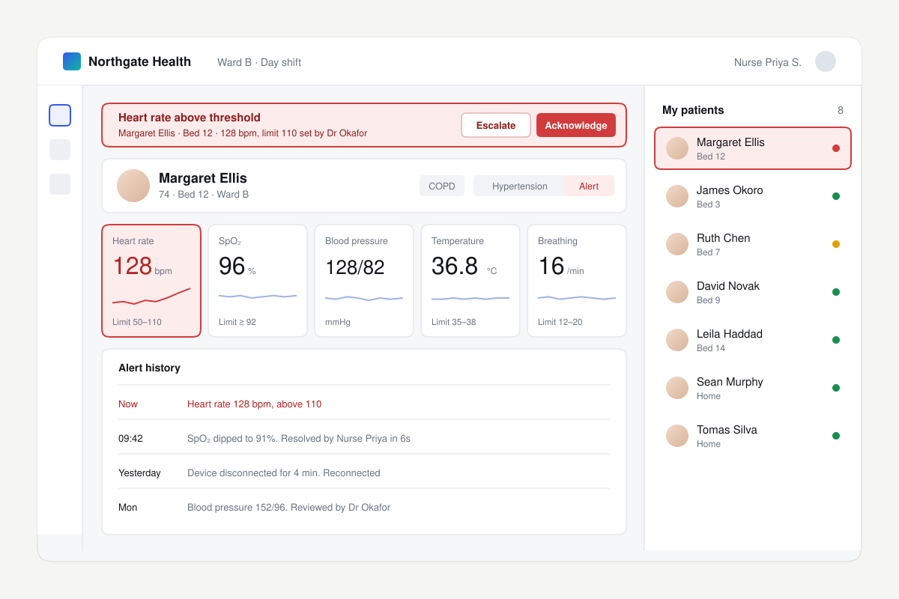

CareRelay
Designing the alert system for a remote patient monitoring platform, where eight seconds can matter.
Long story short
I turned a remote-monitoring vision into an alert dashboard nurses can act on in seconds.
An IoT healthcare company wanted to sell remote patient monitoring (RPM) to clinics and hospitals as a white-label service. They had a vision and a business case, but no product. I was brought in to turn the idea into something they could demo, sell and grow. CareRelay is the name I use here for the platform.
-
01Systems
Mapped the full alert lifecycle and reframed the product as an escalation system, not a data dashboard.
-
02Prioritisation
Ranked clinical data into four tiers and scoped the MVP with MoSCoW to fit a tight budget.
-
03Testing
Ran A/B tests with clinical staff that measured time to find the critical alert, not preference.
How might we make sure the right person sees a critical alert, and acts on it, within seconds?
Challenge
When a patient presses SOS, someone needs to respond in about eight seconds. RPM produces a flood of numbers, and every second a nurse spends hunting through a cluttered screen is a second the patient doesn't have. All on a short timeline, with a small team and a strict budget.
Outcome
The client agreed to the recommended changes, including several new features, and the MVP was built around the alert-first layout that won in testing.
Context
Where it started
The client had a lot going for them, and one big gap.
What they had
A strong vision. A clear business case. Stakeholders who were on board.
What they didn't
A usable product. No dashboard, no workflows, and no shared picture of how nurses and doctors would actually use it day to day.
The constraints
Three questions first
So before drawing anything, I asked:
- How does an RPM system actually work?
- What job does the dashboard do inside it?
- Who are we really designing for?
How RPM works, end to end
I mapped the whole lifecycle of an alert, from a sensor reading to a closed case. Tap through it.
Measure
Wearables and home devices read heart rate, blood oxygen, blood pressure, temperature and breathing rate. The patient also has an SOS button.
Send
Readings travel through a gateway to the cloud, continuously.
Check
Every reading is compared with thresholds the doctor set for that specific patient.
Alert
Cross a threshold, or press SOS, and an alert fires. It goes to the patient's assigned nurse first. This is where the dashboard lives.
Respond
Someone acknowledges, checks in, or acts. If nobody does, the alert climbs the escalation chain.
Record
Everything is logged: who saw it, who acted, how long it took. That history feeds the next decision, and the audit trail.
Context
Who it's for
I focused on the decisions each person is responsible for, not just their job title. Healthcare personas helped me map who touches the dashboard most, and interviews with each group showed me what could break the platform for them.
P1Nurse
Decides: is this patient OK right now? Responds first, every time.
Needs: to see who needs help in one glance, across all her assigned patients, and act without hunting.
P2Supervisor nurse
Decides: who picks this up when the nurse can't?
Needs: to know immediately when an alert has passed to her, and what's already been tried.
P3Doctor
Decides: what's the treatment, and what should the thresholds be?
Needs: every patient across wards, trends over time, and controls to add patients and adjust limits.
!The common thread
Nobody wanted more data. Everyone wanted less noise. Too many low-priority alerts train people to ignore all of them.
Problem
The insight: it's an escalation system
Mapping the lifecycle changed how I saw the product. This isn't a data dashboard. It's a relay. Alerts pass up three levels until someone picks them up.
Try it. Trigger an SOS, then respond, or let it time out and watch it climb.
Why this had to be right
If the dashboard is confusing, people respond slower. In this setting, slower means real harm. Every extra second a nurse spends hunting for the alert, reading a cluttered screen or wondering what to click is a second the patient doesn't have.
Process
Getting everyone aligned
A product like this needs more than good ideas. It needs everyone pulling the same way. So I set up a clear product vision early, and a tight loop with PMs and engineers that kept approvals fast.
- Share the visionOne page everyone agrees on
- DesignSmall, testable pieces
- ReviewPMs, engineers, clinicians
- FeedbackConcerns raised early
Regular check-ins meant concerns came up early, when they were cheap to fix. It's a big part of why we moved fast, and why everyone felt they owned the result.
Advocating for UX
The client was used to top-down decisions. Bringing in a user-centred process meant pushing back sometimes: asking for interviews before features, and testing before sign-off. Once the first test results came in, the process sold itself.
Process
Deciding what matters most
Before any layout, one question shaped everything: which data deserves attention, and when? RPM produces a flood of numbers. Show all of it and you slow everyone down.
The priorities didn't come from guesses. They came from:
The four tiers
The higher the tier, the louder it gets. Tap a tier to see what's in it.
Critical: stop what you're doing
- SOS from a patient
- A vital outside the doctor's threshold
Takes over the screen or the top of it, in colour and words, with the action right there.
Primary: always on screen
- Heart rate, SpO₂, blood pressure, temperature, breathing rate
- Patient status in the list
Context: one glance away
- Recent alert history and who handled it
- Short trend lines
- Device connection and battery
Reference: when you ask for it
- Full history and graphs
- Demographics, conditions, notes
- Threshold settings (doctor only)
Scoping the MVP with MoSCoW
With little time and budget, I had to be ruthless. A MoSCoW analysis decided what made the first release: enough to fix the core problems, nothing that would sink the schedule.
MustMVP
- Real-time alert feed
- Full-screen SOS
- Assigned patient list with status
- Key vitals per patient
- Acknowledge and auto-escalate
ShouldSoon
- Alert history
- Vitals trend graphs
- Doctor-set thresholds
- Add a patient
CouldLater
- Shift handover notes
- Ward-level analytics
- Device health view
Won'tNot now
- Video consultations
- Patient-facing app
- Full records integration
A call I lost
[The decision you didn't win, in one line]
- What I pushed for
- [e.g. vitals trend graphs in the first release, if you argued for them]
- What we did
- [What MoSCoW or the client decided instead]
- Why
- [The constraint: timeline, budget, engineering effort]
- What I took from it
- [What happened after, and what you'd do with that next time]
Learning from competitors
I studied competing RPM dashboards for good patterns, new ideas and gaps we could fill.
Worth keeping
Patient lists sorted by status. Consistent colours for severity. Vitals as compact cards with a small trend line.
Gaps we could own
Alerts that look like every other notification. Escalation that's invisible to the person it passes to. One view crammed with every role's tools.
With user feedback, a UX review and the competitive picture together, the client agreed to the recommended changes, including several new features.
Process
Testing for speed, not taste
To check the priorities early, I made several versions of the dashboard: sketches, low-fidelity wireframes and simple UI models. Then I ran informal A/B tests with clinical staff.
I wasn't asking which one they liked. I was measuring how fast they found the critical alert, what drew their eye, and what got buried. Try it yourself.
From sketch to screen
The versions I tested, from paper to the final UI.


One of these twelve patients has a heart rate above threshold. Find them and click as fast as you can.
The results reshaped the hierarchy: less density, fewer competing numbers, and critical data that stays loud and actionable.
The sitemap
Two roles, two shapes. The nurse app stays shallow so nothing is more than a tap away. The doctor app goes deeper.
- Dashboard
- Alert banner / SOS
- Selected patient
- My patients list
- Patient
- Key vitals
- Alert history
- Profile
- Alerts
- Overview
- All wards
- Active and escalated alerts
- Patients
- Add patient
- Patient detail
- Graphs and history
- Thresholds
- Settings
Solution
Final designs
Switch between the states below. The notes underneath change with each one.
Patients
+ Add patientEdit thresholdsNurse dashboard, normal
Her assigned patients sit in the list on the right. The selected patient's profile, five key vitals and recent alert history stay in view. Nothing shouts, because nothing needs to.
Vital alert
Margaret's heart rate crossed the 110 bpm limit her doctor set. A banner names the patient, the reading and the limit, with Acknowledge and Escalate right there. The vital card and her row in the list turn red too, so the alert reads from anywhere on screen.
SOS
The patient pressed for help. This one interrupts everything: a full-screen takeover with the patient, the location, a countdown and one big primary action. The countdown shows exactly when it will pass to the supervisor.
Doctor view
The nurse view is read and react. The doctor view is for acting and managing. Doctors see patients across every ward, add new ones, open graphs and history, and set the thresholds that drive every alert.
Impact
Outcome
With user feedback, a UX review and the competitive picture side by side, the client agreed to the recommended changes, including several new features. The MVP was scoped around the alert-first hierarchy that tested faster with clinical staff, and split into two role-based views.
Reflection
What I learned
- Understand the system before the screenMapping the lifecycle showed me this was an escalation system. That one insight shaped every screen after it.
- Scope is a design decisionWith a fixed timeline, saying no early with MoSCoW protected the things that mattered.
- Measure reaction time, not preferenceIn clinical tools, "which do you like?" is the wrong question. "How fast did you find it?" is the right one.
- Alignment is speedA shared vision and short feedback loops made approvals fast, and helped a top-down team trust a user-centred process.
What I'd do differently
- Test on a real shiftSessions told us how fast people found an alert. Shadowing a ward shift would show how alerts compete with everything else a nurse is doing.
- Measure alarm fatigue over weeksSpeed on day one isn't the whole story. I'd track acknowledgement times over a few weeks to see whether people start tuning alerts out.
Appendix
Principles used
The UX principles behind the decisions above. Tap any one to see how it applied.
Preattentive processingPerception
The eye spots colour, size and motion before we consciously read. Alerts use all three so they're seen in a fraction of a second.
Alarm fatigueClinical safety
Too many alerts, and people stop reacting to any of them. Only critical events are allowed to interrupt.
Visibility of system statusNielsen #1
Everyone always knows what's happening: who has the alert, how long it's been, and when it will escalate.
Not colour aloneWCAG 1.4.1
Red is backed up by words, position and icons, so colour-blind staff and poor screens never hide an alert.
Cognitive loadWorking memory
Five key vitals, not fifty data points. Less to process means faster, safer decisions.
Progressive disclosureComplexity
Show what's needed now and reveal more on request. Nurses get the essentials, doctors can dig deeper.
Hick's lawDecision time
Fewer choices, faster decisions. The SOS screen offers one primary action and one fallback.
Fitts's lawTarget size
The actions you need under pressure are large and sit right next to the alert.
Recognition over recallNielsen #6
Limits, history and context sit beside each reading, so nobody has to remember what "normal" is for this patient.
Consistency and standardsNielsen #4
Same severity colours, same layout logic across nurse and doctor views, so moving between them costs nothing.